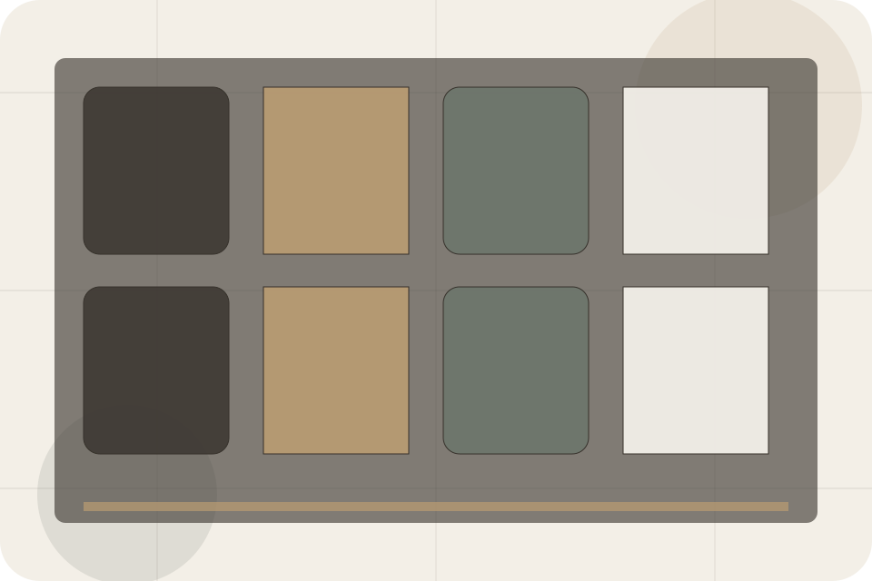
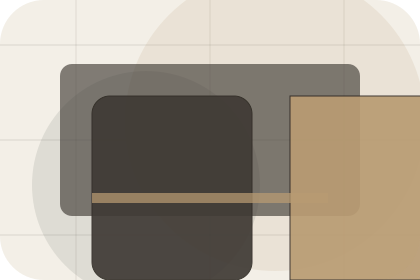
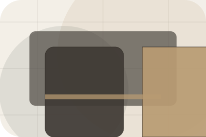
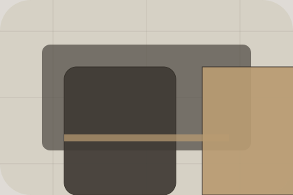

Booking / 01
Booking by Stay
Booking shaped for hospitality, hotels & guest accommodation decisions.
Booking opens as a clear hospitality decision hub: what Stay offers, who it helps, why it matters, and which route to take first.
The first screen combines positioning, proof, primary action, and fast internal navigation, so people can act immediately or compare the rest of the booking route with context.
Check availabilityPlan the visitReserve with context
Serene full-bleed stay hero
Check Availability
Select the closest route and Stay keeps the next step, proof, and follow-up expectation aligned with comfort and availability.

Booking / 02
Send the right details
Dates makes the contact path concrete: what to send, how the response works, and what Stay needs before visitors check availability.
The section reduces contact friction by naming the channel, expected detail, privacy path, and response expectation instead of dropping visitors into a generic form.
Explore Booking- 01
Details
What information helps Stay respond with a useful answer instead of a generic reply.
- 02
Timing
How the visitor should think about response, urgency, location, or availability.
- 03
Reply
The expected next message keeps scope, timing, and the first practical step clear.
Booking / 03
Send the right details
Guests makes the contact path concrete: what to send, how the response works, and what Stay needs before visitors check availability.
The section reduces contact friction by naming the channel, expected detail, privacy path, and response expectation instead of dropping visitors into a generic form.
Explore BookingStay keeps guests practical: send the key details, choose the right contact route, and know what kind of reply to expect.
Check AvailabilityBooking / 04
Compare service routes
Rooms explains the practical scope, best-fit situations, and expected outcome so hospitality visitors can compare options without decoding jargon.
The section keeps the offer concrete: what is included, who it is best for, what decision it supports, and which linked route gives the deeper detail.
Explore Booking
Best Fit
Who should use rooms and when it belongs in the booking journey.
Serene full-bleed stay hero
Check Availability
Select the closest route and Stay keeps the next step, proof, and follow-up expectation aligned with comfort and availability.
Booking / 05
Send the right details
Addons makes the contact path concrete: what to send, how the response works, and what Stay needs before visitors check availability.
The section reduces contact friction by naming the channel, expected detail, privacy path, and response expectation instead of dropping visitors into a generic form.
Explore BookingDetails
What information helps Stay respond with a useful answer instead of a generic reply.
Timing
How the visitor should think about response, urgency, location, or availability.
Reply
The expected next message keeps scope, timing, and the first practical step clear.
Booking / 06
Send the right details
Policies makes the contact path concrete: what to send, how the response works, and what Stay needs before visitors check availability.
The section reduces contact friction by naming the channel, expected detail, privacy path, and response expectation instead of dropping visitors into a generic form.
Explore BookingWhat information helps Stay respond with a useful answer instead of a generic reply.
How the visitor should think about response, urgency, location, or availability.
The expected next message keeps scope, timing, and the first practical step clear.
Booking / 07
Compare scope and terms
Payment makes commercial comparison easier by showing fit, scope, and terms before hospitality visitors ask for the next step.
The layout keeps price-sensitive decisions honest: it separates starting scope, fuller delivery, and ongoing support so the visitor can ask a sharper question.
Explore BookingFit
Who the offer is for, which scope it suits, and when a different route may be better.
Scope
What is included clearly enough for hospitality, hotels & guest accommodation visitors to compare value without hidden jargon.
Terms
The practical details that should be confirmed before someone asks to check availability.
Booking / 08
Send the right details
Confirmation makes the contact path concrete: what to send, how the response works, and what Stay needs before visitors check availability.
The section reduces contact friction by naming the channel, expected detail, privacy path, and response expectation instead of dropping visitors into a generic form.
Explore BookingDetails
What information helps Stay respond with a useful answer instead of a generic reply.
Timing
How the visitor should think about response, urgency, location, or availability.
Reply
The expected next message keeps scope, timing, and the first practical step clear.
Booking / 09
Send the right details
Help makes the contact path concrete: what to send, how the response works, and what Stay needs before visitors check availability.
The section reduces contact friction by naming the channel, expected detail, privacy path, and response expectation instead of dropping visitors into a generic form.
Open Contact
Details
What information helps Stay respond with a useful answer instead of a generic reply.
Booking / 10
Check Availability
Stay closes the booking route with a clear action, a quick reminder of the value, and a low-friction way to check availability.
Visitors who are ready can use the primary action. Visitors who are still comparing can scan the section links, proof, and support routes before they check availability.
Check AvailabilityThe final block keeps the choice simple: act now, compare one more proof route, or send enough detail for a focused response.
Check Availabilitycomfort and availability
Check Availability
A hotel site with serene full-bleed rooms, understated booking modules, experience cards, and policy calm. Booking ends with a direct path to check availability, plus enough context for visitors who still need to compare.

Check AvailabilityImportant notes before you act
Rates, availability, cancellation, and access policies depend on selected dates and booking terms.